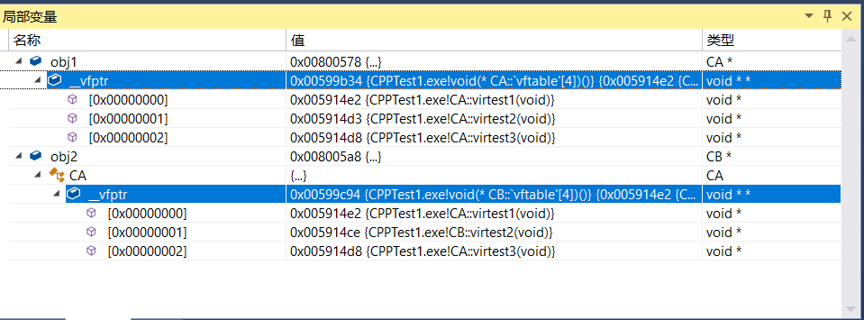
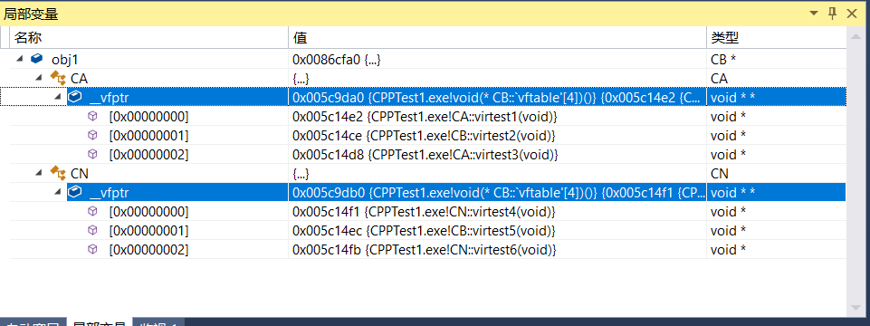

虚函数分析与总结
虚函数调用形式
虚函数不一定就是调用的虚表指针，得看调用形式。
- 直接使用类对象的时候是使用类里面的函数地址。
- 指针的时候才会去虚表里面寻址调用。
#include <iostream>
using namespace std;
class CA {
public:
virtual void virtest() {
cout << "virtest" << endl;
}
};
int main() {
CA obj1;
CA obj2;
CA obj3;
/**
* 0x00007ff6f5551715 <+53>: mov %rax,%rcx
* 0x00007ff6f5551718 <+56>: call 0x7ff6f5553020 <CA::virtest()>
* 0x00007ff6f555171d <+61>: lea -0x28(%rbp),%rax
* 0x00007ff6f5551721 <+65>: mov %rax,%rcx
* 0x00007ff6f5551724 <+68>: call 0x7ff6f5553020 <CA::virtest()>
* 0x00007ff6f5551729 <+73>: lea -0x30(%rbp),%rax
* 0x00007ff6f555172d <+77>: mov %rax,%rcx
* 0x00007ff6f5551730 <+80>: call 0x7ff6f5553020 <CA::virtest()>
*
* 可以看到，调用的是同一个地址 0x7ff6f5553020
*/
obj1.virtest();
obj2.virtest();
obj3.virtest();
CA *pObj1 = new CA;
CA *pObj2 = new CA;
CA *pObj3 = new CA;
pObj1->virtest();
pObj2->virtest();
pObj3->virtest();
system("pause");
return 0;
}
虚表寻址
指针长度问题
x86 占四字节，所以是
int *CA obj1; // 函数指针，void 可以指向任何类型 typedef void(*fn_vfptr) (); fn_vfptr fnVfptr = (fn_vfptr)*(int *)*(int *)(&obj1); fnVfptr();x64 站 8 字节，所以使用的是
int64_t * 或者long longCA obj1; // 函数指针，void 可以指向任何类型 typedef void(*fn_vfptr) (); fn_vfptr fnVfptr = (fn_vfptr)*(int64_t *)*(int64_t *)(&obj1); fnVfptr();虚表指针（
__vfptr）是在实例化的时候才会出现，而虚表在编译的时候就已经生成。
单继承
- 重写后虚表中的函数地址会发生覆盖
父类用子类对象赋值，依然调用父类的虚函数表。
是因为编译器会把子类中父类的部分切出来给父类，但是虚函数指针不会覆盖而是构造。
obj3.virtest();
obj4.virtest();使用的是类的东西，不会去虚表里面寻找【要指针才会找~】
81
#include <iostream>
using namespace std;
class CA {
public:
virtual void virtest1() {
cout << "CA virtest1" << endl;
}
virtual void virtest2() {
cout << "CA virtest2" << endl;
}
virtual void virtest3() {
cout << "CA virtest3" << endl;
}
};
class CB :public CA {
public:
// 重写
virtual void virtest2() {
cout << "CB virtest2" << endl;
}
};
int main() {
/*
obj1 地址 虚表指针__vfptr
0x00800578 34 9b 59 00
__vfptr 虚表
0x00599B34 e2 14 59 00 d3 14 59 00 d8 14 59 00
obj2 地址 虚表指针__vfptr
0x008005A8 94 9c 59 00
__vfptr 虚表
0x00599C94 e2 14 59 00 ce 14 59 00 d8 14 59 00
可以看到虚表中只有重写了的那个虚函数地址发生了覆盖
由 d3 14 59 00 --> ce 14 59 00
*/
CA *obj1 = new CA;
CB *obj2 = new CB;
system("pause");
return 0;
}

#include <iostream>
using namespace std;
class CA {
public:
virtual void virtest1() {
cout << "CA virtest1" << endl;
}
virtual void virtest2() {
cout << "CA virtest2" << endl;
}
virtual void virtest3() {
cout << "CA virtest3" << endl;
}
};
class CB :public CA {
public:
// 重写
virtual void virtest2() {
cout << "CB virtest2" << endl;
}
};
int main() {
CB obj3;
CA obj4 = obj3; // 使用的是 CA 的虚表，为什么？
for (int i = 0; i < 3; i++) {
typedef void(*fn__vfptr) ();
//fn__vfptr fnVfptr = (fn__vfptr)*((int *)*(int *)(&obj4) + i);
fn__vfptr fnVfptr = (fn__vfptr)*((int *)*(int *)(&obj3) + i);
fnVfptr();
}
system("pause");
return 0;
}
CA virtest1
CA virtest2
CA virtest3
----------
CA virtest1
CB virtest2
CA virtest3
多继承
- 以下代码有几个虚表指针？ 2 个
- 第一个继承的和子类对象指向同一地址
#include <iostream>
using namespace std;
class CA {
public:
virtual void virtest1() {
cout << "CA virtest1" << endl;
}
virtual void virtest2() {
cout << "CA virtest2" << endl;
}
virtual void virtest3() {
cout << "CA virtest3" << endl;
}
};
class CN {
public:
virtual void virtest4() {
cout << "CN virtest4" << endl;
}
virtual void virtest5() {
cout << "CN virtest5" << endl;
}
virtual void virtest6() {
cout << "CN virtest6" << endl;
}
};
class CB :public CA, public CN {
public:
// 重写 CA 的 virtest2
virtual void virtest2() {
cout << "CB virtest2" << endl;
}
// 重写 CN 的 virtest5
virtual void virtest5() {
cout << "CB virtest5" << endl;
}
};
int main() {
CB obj;
CB &objB = obj;
CA &objA = obj;
CN &objN = obj;
printf("objB 地址：0x%X\r\n", &objB);
printf("objA 地址：0x%X\r\n", &objA);
printf("objN 地址：0x%X\r\n", &objN);
system("pause");
return 0;
}
objB 地址：0x8FFB00
objA 地址：0x8FFB00
objN 地址：0x8FFB04
请按任意键继续. . .
